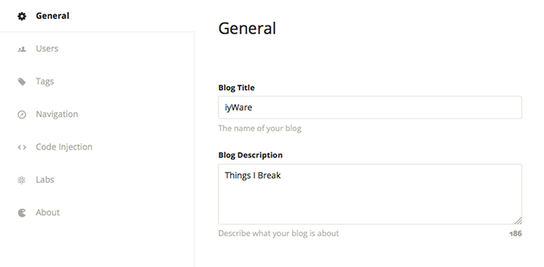
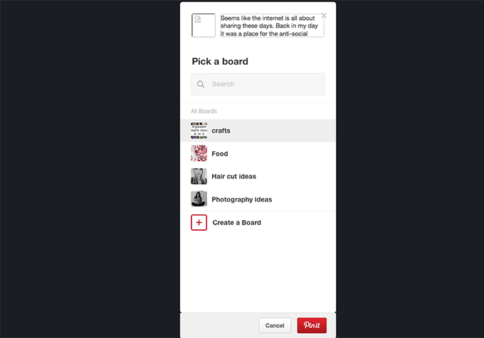
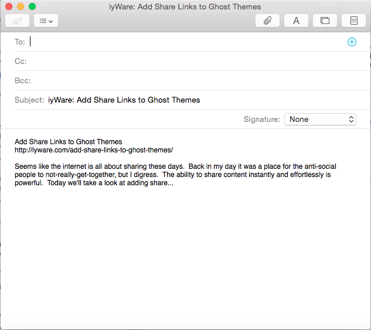

Add Share Links to Ghost Themes
 Danny Wahl
•
•
Danny Wahl
•
•
Seems like the internet is all about sharing these days. Back in my day it was a place for the anti-social people to not-really-get-together, but I digress. The ability to share content instantly and effortlessly is powerful. Today we'll take a look at adding share links to a Ghost theme's handlebars template files, and to make things easier for you I'll provide some basic templates that you can simply copy and paste.
Share vs. Follow vs. Like
First we need to differentiate between "share", "like", and "follow". Share links provide an easy way to repost, send, or otherwise disseminate the content of a post via a third-party channel. Like, and its kin (+1, prop, gild) provide a way to show a sense of solidarity with an idea or the content of the post. And "follow" links provide a way for you to see what content the author is creating on the current platform or another platform.
No-Cost Sharing
This article will be talking about the first option, that is "share" links. We'll look at how to provide links to a variety of various social networks directly in your post template to facilitate the distribution of your post content.
Specifially we will be looking at what I call "no-cost" sharing options. By no-cost I mean that they require no extra resources (JS, images, etc...) and no extra HTTP requests. These are simply links to third-party networks with URL queries crafted to pass the data to the remote site. As a result adding these share links will add no over-head to your site for you or for your users, which is important especially if they're in a country with restricted internet access (like me).
The information for these share links was pieced together from all over the web (other blogs, development API docs) but all of the porting to handlebars was done by me and more than a few were engineered by me- meaning I couldn't find a working example of how to share to a certian social network, so I built it.
Getting Started with Post.hbs
We'll be specifically adding our sharing links to post.hbs because 1) it's the logical option- that's where the content you want to share is! and 2) it's exposed to the {{post}} API in ghost.
So navigate to your theme folder inside of your ghost installation, find post.hbs and open it in your favorite editor. Ghost uses handlebars to dynamically inject specific content into specific tag areas so you won't actually see anything that you've written in ghost inside of your template file. Instead of the title of your post you'll see something like {{title}} and instead of the actual post content you'll see {{content}}.
You'll need to play around with where you want the links to go and how you want to style them, but it's inside of this file that we will be adding them.
Build Links with Ghost APIs
We will be using several Ghost theme APIs to construct our sharing links. Briefly they are:
{{@blog.url}}
This is the FQDN of your blog. For example, on this website {{@blog.url}} resolves to https://iyware.com
{{url absolute="true"}}
This is the complete url to a post on Ghost. For example, on this post {{url absolute="true"}} would output https://iyware.com/add-share-links-to-ghost-themes
{{@blog.title}}
This is the title of your blog which can be set under Ghost → Settings → General like this:

For example, for this website {{@blog.title}} is set to "iyWare". Please do not confuse this with the title of your post, which we'll cover below.
{{title}}
This is the title of the post that you are writing. For example {{title}} on this post is "Add Share Links to Ghost Themes".
{{excerpt}}
The {{excerpt}} function allows you to specific a specific amount of words from the beginning of a post without formatting, meaning no headings, links, italics, etc. You must specificy the number words that you want to include in the excerpt using the words="##" parameter. For example using {{excerpt words="25"}} on this post would return the following:
Seems like the internet is all about sharing these days. Back in my day it was a place for the anti-social people to not-really-get-together, but
Notice tha the word anti-social is not emphasized like it is in this article.
{{tags}}
The {{tags}} API simply returns an alphabetical list of tags associated with a post, but we'll be using some cool parameters later to manipulate their appearance. Unfortunately at this time they can only be output in alphabetical order. The {{tags}} code on this post simply returns {{Ghost}} with a link to the tag page.
{{image}}
The {{image}} tag provides the relative path to a post's image (if it has one). This post doesn't have a post image but if it did it {{image}} would return /images/2015/03/post-image-name.png. Notice that this is not actually returning the image (or an HTML image tag) to an image but rather a partial relative path.
{{#if }} ... {{/if}}
Finally we'll be the {{#if}} API to selectively output different code dependent upon the parameters that we provide. For example to see if a post has an image associated with it we would use {{#if image}} ... {{/if}} and the code between the opening and closing "ifs" would happen.
Discovering Share APIs
Your best bet to find a network that provides a sharing URL API is to search their developer documents (if they have any) or to look at other software that shares the way you want. Remember, for the sake of this post we're not looking for JavaScript or embeddable widgets, we're just looking for HTML anchor tags.
URL Query Strings
A URL can be provided what's known as a "query string" which is simply a list of variables and values. The query string always begins with ?, followed by a variable name (e.g. title), an equals sign =, and the query value (e.g.
Example Share Link: Pinterest
We'll use pinterest as our first example share link. This is the basic structure of the pinterest share URL with the query string empty:
https://pinterest.com/pin/create/button/?url=&media=&description=
So we'll fill out the query with the following API calls:
url={{url absolute="true"}}media={{@blog.url}}{{image}}description={{excerpt words="20"}}
Then we'll wrap the media selector in an {{#if}} block in case there's no image associated with the post.
{{#if image}}&media={{@blog.url}}{{image}}{{/if}}
Notice that the whole query key/value pair are selected, this prevents us from referring a blank image. Finally we wrap it all in an html anchor tag:
<a href="https://pinterest.com/pin/create/button/?{{url absolute="true"}}{{#if image}}&media={{@blog.url}}{{image}}{{/if}}&description={{excerpt words="20"}}">
Pinterest
</a>
Now when you include the link to pinterest in your post and a user clicks on it the result will be something like this:

Example Share Link: E-Mail
There's no more tried-and-true method of sharing online resources than email so it's crucial to include a mailto: link. We'll skip the "to" part of the URL and allow the user to fill that in themselves as it would require adding a form. Instead let's just fill out the query string:
?&subject={{encode @blog.title}}%3A%20{{encode title}}&body={{encode title}}%0D%0A{{url absolute="true"}}%0D%0A%0D%0A{{excerpt words="45"}}%2E%2E%2E
This will output the blog title followed by the post title in the subject of the email like this: "iyWare: Add Share Links to Ghost Themes" and the body will be populated with the post title, URL, and excerpt of the post. Now let's wrap it in an anchor element:
<a class="Email" href="mailto:?&subject={{encode @blog.title}}%3A%20{{encode title}}&body={{encode title}}%0D%0A{{url absolute="true"}}%0D%0A%0D%0A{{excerpt words="45"}}%2E%2E%2E">
Email
</a>
Now when a user clicks on the "email" link their default mail client will open:

In another post I'll provide prebuilt urls for a dozen or so popular social networks that you can just copy and paste into custom theme.